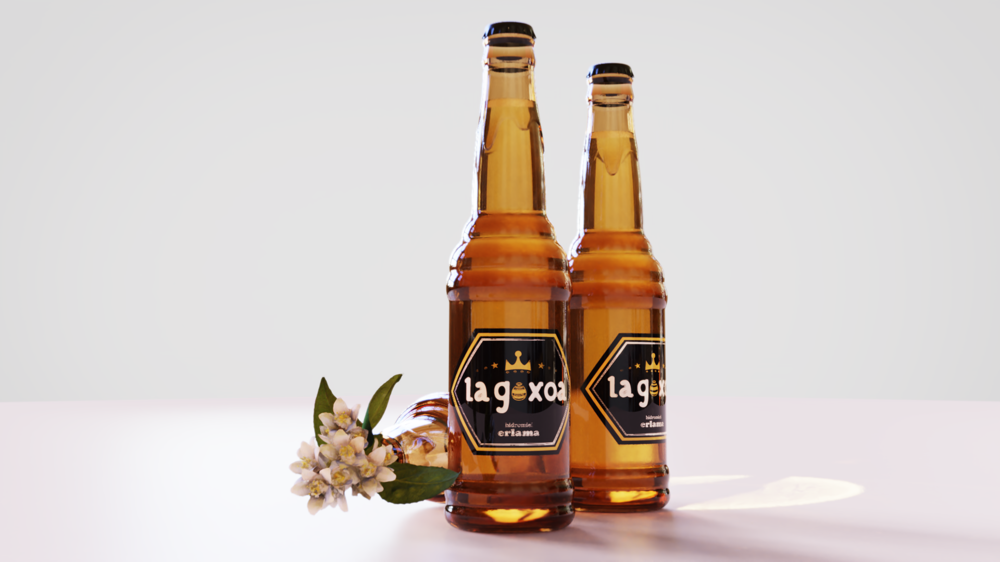
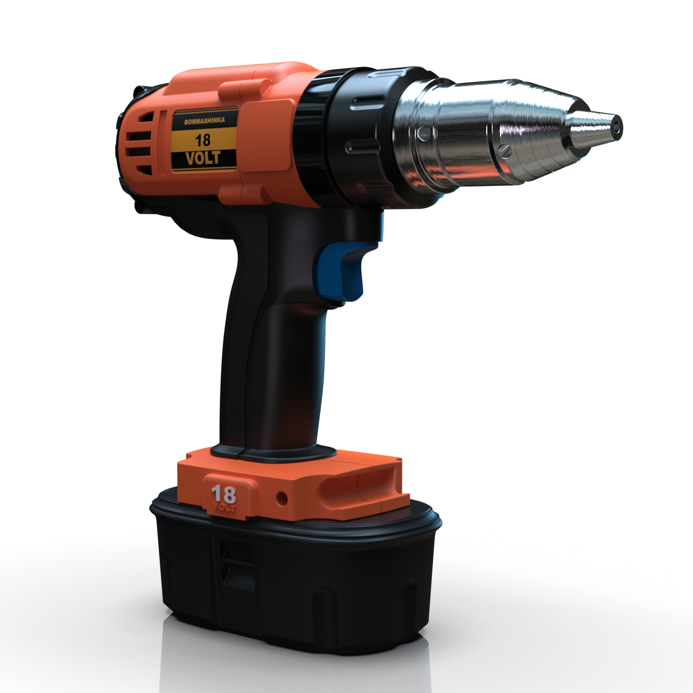

Bottle design for Vidrala's prestigious design contest, exploring innovative packaging solutions that balance functionality with sustainable practices.
La Goxoa is a conceptual bottle design developed for Vidrala's 2026 design competition. The project explores how traditional Basque culture can inspire modern sustainable packaging design.
The design underwent extensive CAD modeling and manufacturing feasibility analysis. Collaboration with Vidrala's production team ensured the bottle design could be manufactured using their existing processes.